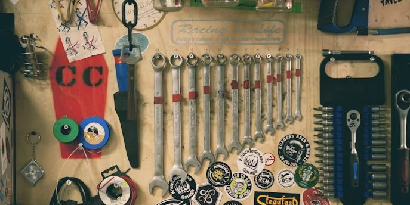
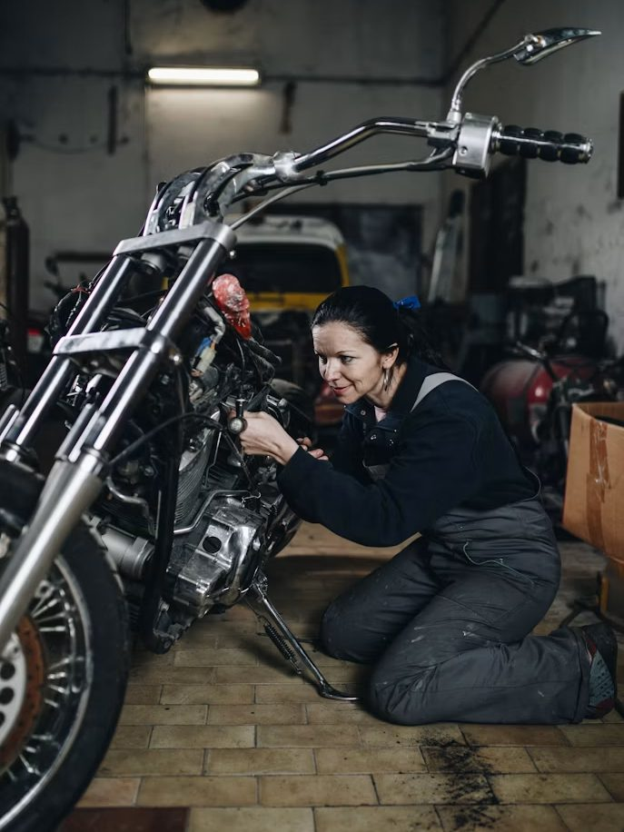

WS-01
Routine service
Oil, filters, chain, brakes, tyres and fasteners against an interval adjusted for how the bike is actually used.
- Time2 to 3 hours
- You getWritten record of what was done and what was measured

W Frontier Services
Service, inspection and diagnostics for the machines people actually ride here. Commuters and working bikes as readily as touring machines.
The workshop handles routine service, diagnostics and pre-route inspections. We work on the machines people actually ride here, which means commuters and working bikes as readily as touring machines.
Saying this up front saves you a journey. Where we refer a job out, we will name someone who does it properly rather than leave you to find out.
WS-01
Oil, filters, chain, brakes, tyres and fasteners against an interval adjusted for how the bike is actually used.
WS-02
A structured check before a long ride, aimed at finding what would strand you rather than what would annoy you.
WS-03
An independent inspection of a bike you are considering, with the faults named plainly and the cost to correct them estimated.
WS-04
For an intermittent fault that has already resisted one attempt. Booked as time rather than as a fixed job.
WS-05
Sag and damping set for your weight, your luggage and the surface you actually ride on.
WS-06
Tyres, brakes, visibility, electrical sealing and chain protection ahead of the long rains.
Times are typical rather than promised, and depend on what the machine turns out to need. Prices are quoted per job after the bike is seen.
Doing these five things before you arrive shortens the job and makes the estimate more accurate.
A rider who says the bike is misfiring has already narrowed the search, often in the wrong direction. A rider who says it loses power above four thousand revolutions when the engine is hot, and only in the rain, has handed the workshop most of the answer.
Write it down before you set off. By the time you arrive you will have stopped noticing the detail that matters.

Tell us the machine and the symptom and we can usually say on the enquiry whether it is a morning job, a day job, or something we would refer out.
This booking form is a front end demonstration. It is not connected to a calendar, an inbox or a booking system. Nothing you enter is stored or sent, and no appointment is created. Until a real endpoint is connected, use the email address in the footer.